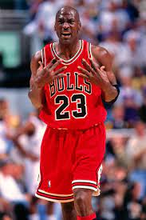

La NBA es fundada el 6 de junio de 1946 como la "Basketball Assosation of America" y adopto su nombre actual en 1949, tras la union de varios clubes de la desesperada 'National Basketball League'. Esta competición ha vivido una amplia y prolongada evolución a lo largo de 75 años, formando en la actualidad una liga compuesta por 30 franquicias, situadas en Estados Unidos y Canadá.
El partido para inaugurar la NBA fue un encuentro entre los NEW YORK KNICKS vs TORONTO HUSKIES (en estos tiempos es Toronto Raptors) el 1ero de noviembre de 1946.
La irrupción del gran Michael Jordan, probablemente el mejor jugador de la historia de la NBA, ayudó a que el interés internacional por la NBA no decayera tras las retiradas de Bird y Magic.
A continiacion veremos a mi opinion mis equipos con sus respectivos jugadores favoritos
Warriors Chicago Bulls Jugadores favoritos